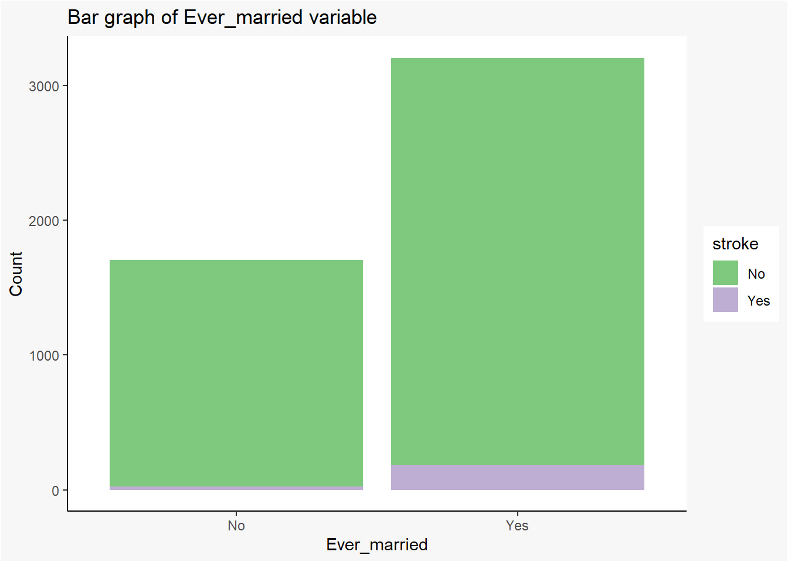
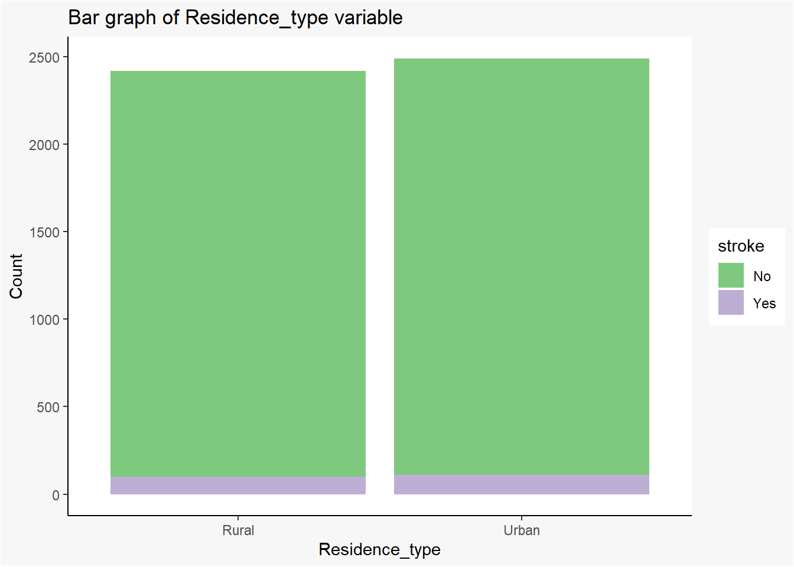

Proiect_SDA ~ Predicția unui Accident Vascular Cerebral ~
Introducere
Prin analiza curentă ne propunem să prezicem apariția unui accident vascular cerebral în rândul unor pacienți, având în vedere informații relevante despre aceștia, care pot fi sintetizate în variabile precum: genul, vârsta, diferite boli, indicele de masă corporală, mediul de proveniență, starea civilă, starea profesională, frecventarea fumatului. Din punctul de vedere al metodologiei, vom utiliza mediul de programare R Studio pentru analiza exploratorie a datelor, dar și pentru aplicarea unor metode precum regresia logistică și arborii de clasificare.
Este bine cunoscut faptul că unul dintre cele mai complexe și importante organe ale corpului este creierul, fără de care nu ne putem desfășura activitățile de zi cu zi, întrucât acesta este responsabil de coordonarea tuturor funcțiilor vitale, a comportamentului, gândurilor și trăirilor pe care le avem.
De asemenea, printre cele mai frecvente cauze de deces în rândul oamenilor se numără accidentul vascular cerebral. Acesta este cunoscut frecvent sub denumirea de AVC și se produce în momentul în care alimentarea cu sânge a unei zone de creier este întreruptă sau redusă, împiedicând țesutul cerebral să primească oxigen și substanțe nutritive. Astfel, în decurs de câteva minute, celulele creierului încep să se degradeze și să se distrugă. Au fost identificate două tipuri principale de AVC:
Ischemic: cauzat de blocarea fluxului de sânge dintr-un vas care este conectat cu creierul
Hemoragic: cauzat de sângerare excesivă la nivelul creierului
Printre consecințele acestora se numără și efectele grave și de lungă durată asupra organismului pacientului, precum dificultăți de vorbire, mișcare, gândire, dar și un risc foarte ridicat de deces. Studiul AVC-ului este o problemă de importanță majoră la nivel mondial, drept pentru care Organizația Mondială a Sănătății furnizează anual informații despre numărul persoanelor decedate sau afectate de această boală (spre exemplu: aproximativ 15 milioane de persoane în anul 2020 – OMS).
În ceea ce ne privește, considerăm că domeniul sănătății ar trebui să fie de un mai mare interes la nivel național și internațional, deoarece sănătatea oamenilor ar trebui să primeze indiferent de circumstanțe. De asemenea, este de datoria noastră să realizăm cât mai multe cercetări în acest sector pentru a putea preveni sau chiar remedia apariția acestei boli. Inovațiile și descoperirile ar trebui să fie concentrate în identificarea unor tratamente mai eficiente și îmbunătățirea celor actuale, fiind cruciale pentru minimizarea efectelor negative ale accidentului vascular cerebral.
Literature Review
Având în vedere importanța acestei problematici la nivel mondial, au fost realizate diverse studii în ceea ce privește analiza factorilor care influențează apariția unui accident vascular cerebral, folosind metode utilizate în data science.
Spre exemplu, în articolul ”A predictive analytics approach for stroke prediction using machine learning and neural networks” (Soumyabrata Dev, et al., sursa: https://www.sciencedirect.com) sunt analizați sistematic diverși factori din fișele medicale electronice ale unor pacienți pentru predicția eficientă a unui AVC. Au fost utilizate tehnici statistice și analiza componentelor principale pentru a ajunge la concluzia că vârsta, bolile de inimă, nivelul mediu de glucoză și hipertensiunea arterială sunt cei mai importanți factori în acest sens. De asemenea, a fost construită și o rețea neuronală care utilizează aceste patru atribute ce oferă cea mai mare rată de acuratețe și cea mai mică rată de pierderi în comparație cu utilizarea tuturor caracteristicilor de intrare disponibile și a altor algoritmi de evaluare comparativă.
De asemenea, articolul intitulat ”Stroke Risk Factors, Genetics, and Prevention” (Amelia K. Boehme et al., sursa: https://www.ncbi.nlm.nih.gov/, National Library of Medicine) ne arată existența factorilor de risc ai AVC care nu pot fi modificați (ex: vârsta, genul, rasa și istoricul familial), dar și factorii de risc care pot fi modificați (ex: hipertensiunea). În general, apariția AVC este posibilă odată cu înaintarea în vârstă și cu creșterea tensiunii arteriale, stabilindu-se o legătură directă între aceste variabile și scopul urmărit. Printre soluțiile propuse de cercetători se numără schimbarea stilului de viață, a nutriției, evitarea excesului de alcool, tutun, controlul periodic la medic.
Un ultim exemplu este studiul “Analysis of main risk factors causing stroke in Shanxi Province based on machine learning models“ (Junjie Liu, et al., sursa: https://www.sciencedirect.com), unde a fost analizat un set de date cu pacienți ce suferă de AVC (2000) și rezidenți (27.583), aplicându-se modele de arbori de decizie, random forest și regresie logisitcă pentru a evalua probabilitatea de apariție a unui AVC pe diferite niveluri de risc. Astfel, s-a demonstrat că hipertensiunea arterială, inactivitatea fizică și excesul de greutate sunt clasați ca primii trei factori de risc ridicat de AVC în Shanxi.
Pentru realizarea analizei curente am folosit ca sursă de date site-ul www.kaggle.com. Setul de date inițial este alcătuit din 5110 observații (pacienți) și 12 coloane (atribute). Astfel, variabilele utilizate sunt:
id: identificator unic al pacientului
gen: “Male”, “Female” sau “Other”
age: vârsta pacientului
hypertension: valoarea 0, dacă pacientul nu suferă de hipertensiune; valoarea 1 dacă pacientul suferă de hipertensiune
heart_disease: valoarea 0, dacă pacientul nu suferă de boli de inimă; valoarea 1 dacă pacientul suferă de boli de inimă
ever_married: starea civilă – “No” (necăsătorit) sau “Yes” (căsătorit)
work_type: starea profesională – “children”, “Govt_jov”, “Never_worked”, “Private” sau “Self-employed”
Residence_type: mediul de proveniență – “Rural” sau “Urban”
avg_glucose_level: nivelul mediu de glucoză din sânge
bmi: indicele de masă corporală
smoking_status: frecvența fumatului – “formerly smoked”, “never smoked”, “smokes” sau “Unknown” (informația nu este disponibilă pentru pacientul respectiv)
stroke: valoarea 0, dacă pacientul nu a avut un AVC; valoarea 1, dacă pacientul a avut un AVC
Ilustrarea datelor
Pentru o înțelegere mai clară a setului de date, am ales să codificăm în ”Yes” și ”No” valorile de 0 și 1 pentru coloanele hypertension, heart_disease și stroke.
Warning in mask$eval_all_mutate(quo): NAs introduced by coercion
head(stroke_data)
id gender age hypertension heart_disease ever_married work_type
1 9046 Male 67 No Yes Yes Private
2 51676 Female 61 No No Yes Self-employed
3 31112 Male 80 No Yes Yes Private
4 60182 Female 49 No No Yes Private
5 1665 Female 79 Yes No Yes Self-employed
6 56669 Male 81 No No Yes Private
Residence_type avg_glucose_level bmi smoking_status stroke
1 Urban 228.69 36.6 formerly smoked Yes
2 Rural 202.21 NA never smoked Yes
3 Rural 105.92 32.5 never smoked Yes
4 Urban 171.23 34.4 smokes Yes
5 Rural 174.12 24.0 never smoked Yes
6 Urban 186.21 29.0 formerly smoked Yes
Analiza Exploratorie a Datelor
Statistici Descriptive
În continuare, am ales să analizăm statisticile descriptive pentru setul nostru de date folosind funcția summary () pentru identificarea valorilor minime, maxime, a mediei, a medianei și a primei și a treia cuartile pentru variabilele numerice, dar și pentru contorizarea numărului de pacienți în funcție de segmentarea variabilelor rămase.
Spre exemplu, vârsta medie a pacienților analizați este de aproximativ 43 de ani, cei mai tineri dintre aceștia având vârsta de 1 an, iar cei cu vârste mai înaintate de 82 de ani. În rândul acestora, nivelul mediu de glucoză din sânge se situează între 55.12 mmol/l și 271.74 mmol/l, în timp ce indicele de masă corporală variază între 10.30 kg/m² și 97.60 kg/m², având o valoare medie de 28.89 kg/m².
Referitor la variabilele calitative, observăm cum predomină pacienții de genul feminin (2994), cei care lucrează în mediul privat (2925) și care sunt căsătoriți (3353), cei mai mulți fiind nefumători (1892). Distribuția urban/rural este aproximativ egală, un număr redus de persoane a înregistrat alte boli precum hipertensiune/boli de inimă și doar un număr de 249 de persoane au suferit un AVC.
summary(stroke_data)
id gender age hypertension heart_disease
Min. : 67 Female:2994 Min. : 0.08 No :4612 No :4834
1st Qu.:17741 Male :2115 1st Qu.:25.00 Yes: 498 Yes: 276
Median :36932 Other : 1 Median :45.00
Mean :36518 Mean :43.23
3rd Qu.:54682 3rd Qu.:61.00
Max. :72940 Max. :82.00
ever_married work_type Residence_type avg_glucose_level
No :1757 children : 687 Rural:2514 Min. : 55.12
Yes:3353 Govt_job : 657 Urban:2596 1st Qu.: 77.25
Never_worked : 22 Median : 91.89
Private :2925 Mean :106.15
Self-employed: 819 3rd Qu.:114.09
Max. :271.74
bmi smoking_status stroke
Min. :10.30 formerly smoked: 885 No :4861
1st Qu.:23.50 never smoked :1892 Yes: 249
Median :28.10 smokes : 789
Mean :28.89 Unknown :1544
3rd Qu.:33.10
Max. :97.60
NA's :201
De asemenea, am folosit și funcția describe () pentru analizarea coeficienților de asimetrie (skew) și boltire (kurtosis) pentru variabilele numerice. Astfel, variabila age înregistrează valori negative ( < 0 ) ale coeficientului de variație (-0.14), ceea ce înseamnă că distribuția valorilor prezintă o ușoară asimetrie la stânga, predominând valorile mari în ceea ce privește vârsta pacienților. Variabilele referitoare la nivelul mediu de glucoză (avg_glucose_level) și la indicele de masă corporală (bmi) înregistrează valori pozitive ( > 0 ) ale coeficientului de variație (1.57 & 1.05), ceea ce înseamnă că distribuția acestora prezintă asimetrie la dreapta, predominând valorile mici în cadrul acestor variabile.
Referitor la valorile coeficientului de boltire, variabilele age (-0.99) și avg_glucose_level (1.68) au distribuții platicurtice ( < 3 ), în timp ce variabila bmi (3.36) are o distribuție leptocurtică ( > 3 ).
#install.packages("psych")library(psych)
Attaching package: 'psych'
The following objects are masked from 'package:ggplot2':
%+%, alpha
Pentru curățarea datelor este necesară identificarea valorilor lipsă din setul de date. Astfel, doar pentru variabila bmi am identificat un număr de 201 observații lipsă, pe care le-am eliminat cu ajutorul funcție na.omit().
De asemenea, este esențială verificarea existenței duplicatelor. Deoarece nu există duplicate, nou set de date rămâne cu un număr de 4909 observații rezultate în urma prelucrărilor.
sum(duplicated(stroke_data2))
[1] 0
Distribuția procentuală în rândul pacienților
Referitor la distribuția procentuală a pacienților analizați, observăm cum 96% (4700) dintre aceștia nu au suferit un AVC, în timp ce 4 % (209) au suferit un AVC.
# A tibble: 2 × 4
stroke patients total percent
<fct> <int> <int> <chr>
1 No 4700 4909 96%
2 Yes 209 4909 4%
Distribuția variabilelor discrete
Pentru o reprezentare vizuală mai clară și pentru confirmarea rezultatelor anterioare, am construit histogramele variabilelor de tip numeric. Astfel, pentru variabila age sunt predominante valorile mai mari de vârstă. Observăm o accentuată asimetrie la dreapta și predominanța valorilor mici pentru variabila avg_glucose_level. De asemenea, asimetria la dreapta și frecvența mare a valorilor mici sunt vizibile și pentru variabila bmi.
`stat_bin()` using `bins = 30`. Pick better value with `binwidth`.
Densitate avg_glucose_level – stroke
Graficul relației dintre nivelul mediu de glucoză din sânge și apariția unui AVC arată faptul că pacienții cu un nivel mediu mai mare de 200 mmol/l au suferit un AVC, în timp ce pacienții cu un nivel mediu cuprins între 50 și 130 mmol/l nu au suferit un AVC. Acest lucru arată faptul că există o legătură directă între nivelul mediu de glucoză din sânge și posibilitatea mai mare de a avea un AVC.
Graficul relației dintre vârstă și apariția unui AVC arată faptul că pacienții cu o vârstă de cel puțin 50 de ani au suferit un AVC (în special intervalul de [70, 80] ani), în timp ce pacienții cu vârste mai mici de 20 de ani nu au suferit un AVC. Acest lucru arată faptul că există o legătură directă între vârstă și posibilitatea mai mare de a avea un AVC.
Graficul relației dintre indicele de masă corporală și apariția unui AVC arată faptul că pacienții cu o valoare a indicelui cuprinsă între 25 și 40 kg/m² au suferit un AVC. De asemenea, pacienții care înregistrează o valoare a indicelui mai mică de 25 kg/m² nu au suferit un AVC. Acest lucru arată faptul că există o legătură directă între indicele de masă corporală și posibilitatea mai mare de a avea un AVC.
Stroke: observăm distribuția persoanelor care au suferit un AVC (4700) și a celor care nu au suferit un AVC (201)
Gender: observăm predominanța pacienților care au suferit un AVC în rândul persoanelor de gen feminin
Hypertension: observăm predominanța pacienților care au suferit un AVC în rândul persoanelor care nu suferă de hipertensiune
heart_disease: observăm predominanța pacienților care au suferit un AVC în rândul persoanelor care nu suferă de boli de inimă
ever_married: observăm predominanța pacienților care au suferit un AVC în rândul persoanelor care sunt căsătorite
work_type: observăm predominanța pacienților care au suferit un AVC în rândul persoanelor care lucrează în domeniul privat
residence_type: observăm distribuția aproximativ egală a pacienților care au suferit un AVC în rândul persoanelor care provin atât din mediul urban, cât și din mediul rural
smoking_status: observăm predominanța pacienților care au suferit un AVC în rândul persoanelor care nu au fumat niciodată
# gender, hypertension, heart_disease, ever_married, work_type, Residence_type, smoking_status, strokevar_stroke <-ggplot(stroke_data2, aes(stroke))+geom_bar()+theme_classic()+scale_color_brewer(palette ="Accent")+scale_fill_brewer(palette ="Accent")+theme(plot.background =element_rect(fill ="grey97"))+labs(title ="Bar graph of Stroke variable", x ="Stroke", y ="Count")var_strokevar_gender <-ggplot(stroke_data2, aes(gender, fill = stroke))+geom_bar()+theme_classic()+scale_color_brewer(palette ="Accent")+scale_fill_brewer(palette ="Accent")+theme(plot.background =element_rect(fill ="grey97"))+labs(title ="Bar graph of Gender variable", x ="Stroke", y ="Count")var_gendervar_hypertension <-ggplot(stroke_data2, aes(hypertension, fill = stroke))+geom_bar()+theme_classic()+scale_color_brewer(palette ="Accent")+scale_fill_brewer(palette ="Accent")+theme(plot.background =element_rect(fill ="grey97"))+labs(title ="Bar graph of Hypertension variable", x ="Hypertension", y ="Count")var_hypertensionvar_heart_disease <-ggplot(stroke_data2, aes(heart_disease, fill = stroke))+geom_bar()+theme_classic()+scale_color_brewer(palette ="Accent")+scale_fill_brewer(palette ="Accent")+theme(plot.background =element_rect(fill ="grey97"))+labs(title ="Bar graph of Heart_disease variable", x ="Heart_disease", y ="Count")var_heart_diseasevar_ever_married <-ggplot(stroke_data2, aes(ever_married, fill = stroke))+geom_bar()+theme_classic()+scale_color_brewer(palette ="Accent")+scale_fill_brewer(palette ="Accent")+theme(plot.background =element_rect(fill ="grey97"))+labs(title ="Bar graph of Ever_married variable", x ="Ever_married", y ="Count")var_ever_marriedvar_work_type <-ggplot(stroke_data2, aes(work_type, fill = stroke))+geom_bar()+theme_classic()+scale_color_brewer(palette ="Accent")+scale_fill_brewer(palette ="Accent")+theme(plot.background =element_rect(fill ="grey97"))+labs(title ="Bar graph of Work_type variable", x ="Work_type", y ="Count")var_work_typevar_Residence_type <-ggplot(stroke_data2, aes(Residence_type, fill = stroke))+geom_bar()+theme_classic()+scale_color_brewer(palette ="Accent")+scale_fill_brewer(palette ="Accent")+theme(plot.background =element_rect(fill ="grey97"))+labs(title ="Bar graph of Residence_type variable", x ="Residence_type", y ="Count")var_Residence_typevar_smoking_status <-ggplot(stroke_data2, aes(smoking_status, fill = stroke))+geom_bar()+theme_classic()+scale_color_brewer(palette ="Accent")+scale_fill_brewer(palette ="Accent")+theme(plot.background =element_rect(fill ="grey97"))+labs(title ="Bar graph of Smoking_status variable", x ="Smoking_status", y ="Count")var_smoking_status


De asemenea, am transformat variabila numerică bmi într-o variabilă calitativă pentru a putea evidenția mai clar legătura dintre masa corporală și posibilitatea de a manifesta un AVC. Astfel, pentru o valoare a indicelui de masă corporală < 18.5, pacientul este considerat subponderal, pentru intervalul [18.5, 25], pacientul este considerat cu o greutate normală, pentru intervalul [25, 30], pacientul este considerat supraponderal, iar pentru o valoare > 30, pacientul este considerat obez. Astfel, observăm predominanța pacienților care au suferit un AVC în rândul persoanelor care sunt supraponderale sau obeze.
id gender age hypertension heart_disease ever_married work_type
1 9046 Male 67 No Yes Yes Private
2 51676 Female 61 No No Yes Self-employed
3 31112 Male 80 No Yes Yes Private
4 60182 Female 49 No No Yes Private
5 1665 Female 79 Yes No Yes Self-employed
6 56669 Male 81 No No Yes Private
Residence_type avg_glucose_level bmi smoking_status stroke
1 Urban 228.69 Obesity formerly smoked Yes
2 Rural 202.21 Obesity never smoked Yes
3 Rural 105.92 Obesity never smoked Yes
4 Urban 171.23 Obesity smokes Yes
5 Rural 174.12 Healthy never smoked Yes
6 Urban 186.21 Overweight formerly smoked Yes
var_bmi <-ggplot(stroke_data3, aes(bmi, fill = stroke))+geom_bar()+theme_classic()+scale_color_brewer(palette ="Accent")+scale_fill_brewer(palette ="Accent")+theme(plot.background =element_rect(fill ="grey97"))+labs(title ="Bar graph of Bmi variable", x ="Bmi", y ="Count")var_bmi
Matricea de corelație
Pentru confirmarea rezultatelor de mai sus, am ales să realizăm matricea de corelație a variabilelor de tip numeric din setul de date inițial. Astfel, observăm prezența corelațiilor pozitive între atribute. Referitor la variabila de referință ”Stroke”, se remarcă faptul că apariția unui AVC este cel mai mult influențată de vârsta pacientului (0.23), în raport cu variabilele reprezentate.
Pentru a putea aplica regresia logistică și arborii de clasificare am transformat variabilele calitative din setul inițial în variabile numerice. De asemenea, am împărțit setul de date în două subseturi, setul de antrenare - care conține 75% din numărul total de observații (3682) și setul de testare - care conține restul de 25% din observații (1227).
Pentru a construi modelul de regresie, vom utiliza funcția “glm ()” - General Linear Model.
Observăm cum pentru variabilele age, hypertension, heart_disease și avg_glucose_level valorile p-value sunt sub pragul de 0.05, ceea ce înseamnă că doar acestea sunt reprezentative pentru modelul nostru, având o influență asupra posibilității de a suferi sau nu un AVC.
Totuși, putem determina discrepanțele dintre modelul curent, cel care conține un coeficient pentru fiecare variabilă independentă și modelul nul, cel care conține doar termenul liber. Devianța nulă (Null deviance) sau reziduală (Residual deviance) reprezintă suma pătratelor abaterilor din modelele de regresie estimate cu metoda celor mai mici pătrate. Devianța nulă ilustrează cât de bun este răspunsul prognozat de un model în care apare numai termenul liber, în timp ce Devianța reziduală (a modelului) arată cât de bun este răspunsul prognozat de un model în care se adaugă variabilele independente.
Cu cât valoarea deviației este mai mică, cu atât modelul este mai bun din punct de vedere statistic. Tocmai de aceea, datorită faptului că deviația reziduală are o valoare de 1037.5 < 1297.9, valoarea deviației nule, putem afirma faptul că modelul curent este mai adecvat decât modelul nul.
#install.packages("caTools")library(caTools)set.seed(50)# Extrage 2 esantioane (75% din obs vs 25% din obs)split=sample.split(stroke_data5$stroke, SplitRatio=0.75)#split# Subm pt care split = TRUEsetantrenare<-subset(stroke_data5, split==TRUE)#setantrenare# 3682 obssettestare<-subset(stroke_data5, split==FALSE)# settestare # 1227 obs# Model regresiemodel<-glm(stroke~gender + age + hypertension +heart_disease + ever_married + work_type + Residence_type + avg_glucose_level + bmi + smoking_status, data=setantrenare, family = binomial)summary(model)
Call:
glm(formula = stroke ~ gender + age + hypertension + heart_disease +
ever_married + work_type + Residence_type + avg_glucose_level +
bmi + smoking_status, family = binomial, data = setantrenare)
Deviance Residuals:
Min 1Q Median 3Q Max
-1.1738 -0.2964 -0.1638 -0.0835 3.6071
Coefficients:
Estimate Std. Error z value Pr(>|z|)
(Intercept) -7.973851 0.698661 -11.413 < 2e-16 ***
gender 0.091838 0.177241 0.518 0.6044
age 0.061641 0.006491 9.496 < 2e-16 ***
hypertension 0.521101 0.204087 2.553 0.0107 *
heart_disease 0.516949 0.235778 2.193 0.0283 *
ever_married 0.077446 0.287831 0.269 0.7879
work_type 0.047687 0.086189 0.553 0.5801
Residence_type 0.090534 0.172715 0.524 0.6002
avg_glucose_level 0.006124 0.001491 4.109 3.98e-05 ***
bmi 0.006653 0.013052 0.510 0.6103
smoking_status -0.015103 0.077702 -0.194 0.8459
---
Signif. codes: 0 '***' 0.001 '**' 0.01 '*' 0.05 '.' 0.1 ' ' 1
(Dispersion parameter for binomial family taken to be 1)
Null deviance: 1297.9 on 3681 degrees of freedom
Residual deviance: 1037.5 on 3671 degrees of freedom
AIC: 1059.5
Number of Fisher Scoring iterations: 8
Vom cerceta impactul variabilelor analizate asupra șanselor unui pacient de a suferi sau nu un AVC prin aplicarea funcției exponențiale asupra coeficienților modelului de regresie logistică. Spre exemplu, interpretând câteva rezultate, obținem:
atunci când vârsta crește cu o unitate, șansele de manifestare a unui AVC cresc cu 6.35%
atunci când indicele masei corporale crește cu o unitate, șansele de manifestare a unui AVC cresc cu 0.66%
Pe liniile matricei de confuzie se află etichetele previzionate, iar pe coloane, etichetele reale din setul de testare. Astfel, setul de antrenare conține 0 + 1 = 1 pacient care este predispus la apariția unui AVC și 1175+51 = 1226 pacienți care nu sunt predispuși la apariția unui AVC.
Pacientul predispus la apariția unui AVC a fost corect clasificat, în timp ce din cei 1226 de pacienți care nu sunt predispuși la apariția unui AVC, 1175 au fost clasificați corect ca nefiind predispuși la acest risc, în timp ce 51 au fost eronat clasificați.
Acuratețea clasificării se determină ca raportul dintre suma elementelor de pe diagonala principală și suma tuturor elementelor din această matrice. Astfel, rata de acuratețe este de (1175+1) / (1175+1+0+51) = 1176 / 1227 = 0.9584 (95.64%). Acest rezultat arată faptul că 95.64% din elementele setului de testare au fost corect previzionate.
# Matricea de confuzieconf_matrix<-table(settestare$stroke, pred2)conf_matrix
pred2
0 1
No 1175 0
Yes 51 1
Curba ROC
Un alt instrument utilizat pentru acuratețea modelului este Curba ROC. O evaluare a clasificării este dată de apartenenţa indicatorului AUC (aria de sub curba ROC) la subintervale ale lui [0.5,1]. Întrucât valoarea de 0.86 aparține intervalului [0.8, 0.9] => această clasificare este evaluată ca fiind una bună, existând 86% șanse ca modelul să poată distinge între clasa pozitivă (pacienții predispuși la AVC) și clasa negativă (pacienții care nu sunt predispuși la AVC).
Astfel, putem afirma că modelul de regresie este o metodă reprezentativă pentru setul de date analizat.
# Curba ROC - Instrument pentru acuratete#install.packages("ROCR")library(ROCR)p<-predict(model, newdata=settestare, type="response")# rata TPpr<-prediction(p, settestare$stroke)# rata FPprf<-performance(pr, measure="tpr", x.measure="fpr")plot(prf)
# Aria de sub curba ROCauc<-performance(pr, measure="auc")auc<-auc@y.values[[1]]auc
[1] 0.858838
Arbori de Clasificare
Clasificarea oferă modelul predictiv sau funcția care prezice noile date în categorii sau etichete distincte pe baza datelor istorice, fiind evaluată prin acuratețea clasificării. Astfel, folosind arborii de clasificare ne-am propus să avem în vedere variabila stroke (binară) care prin valorile de Yes și No arată dacă un pacient din setul de date este predispus la apariția unui AVC.
De menționat este faptul că am păstrat aceeași modalitate de împărțire a setului de date: 3682 de observații pentru setul de antrenare și 1227 de observații pentru setul de testare.
library(caTools)set.seed(50)# Extrage 2 esantioane (75% din obs vs 25% din obs)split2=sample.split(stroke_data5$stroke, SplitRatio=0.75)# split2# Subm pt care split = TRUEsetantrenare2<-subset(stroke_data5, split2==TRUE)# setantrenare2# 3682 obssettestare2<-subset(stroke_data5, split2==FALSE)# settestare # 1227 obshead(stroke_data5,10)
Pentru construirea arborelui de clasificare am utilizat funcția tree (). Astfel, arborele conține 4 noduri terminale. Observăm atât faptul că variabila de la rădăcina arborelui și anume age este cea care are cea mai mare putere de clasificare în realizarea arborelui, cât și faptul că eticheta “No” este predominantă (cea mai mare probabilitate pe fiecare nivel al arborelui), având în vedere datele analizate
Astfel, pentru o vârstă mai mică de 47.5 ani, șansele ca un pacient să nu fie predispus la apariția unui AVC sunt în proporție de 99%. Totodată observăm cum ramificarea în funcție de nivelul mediu de glucoză din sânge ne sugerează faptul că pentru un nivel mai mic de 183.7 mmol/l, șansele ca un pacient să sufere un AVC sunt în proporție de 11.03%, în timp ce pentru o valoare mai mare de acest prag, chiar dacă observăm că eticheta predominantă rămâne “No”, șansele ca un pacient să sufere un AVC înregistrează o ușoară creștere, atingând valoarea de 26.49%.
print(arbore)
node), split, n, deviance, yval, (yprob)
* denotes terminal node
1) root 3682 1298.0 No ( 0.957360 0.042640 )
2) age < 47.5 2028 115.5 No ( 0.995562 0.004438 ) *
3) age > 47.5 1654 996.8 No ( 0.910520 0.089480 )
6) age < 67.5 1058 449.6 No ( 0.945180 0.054820 ) *
7) age > 67.5 596 505.9 No ( 0.848993 0.151007 )
14) avg_glucose_level < 183.87 445 312.8 No ( 0.887640 0.112360 ) *
15) avg_glucose_level > 183.87 151 174.6 No ( 0.735099 0.264901 ) *
Predicție
În continuare, am realizat predicția pe setul de testare, de unde putem observa cum pacienții considerați nu prezintă riscul de a suferi un AVC.
Totuși, matricea de confuzie arată faptul că 52 dintre pacienții care sunt predispuși la apariția unui AVC au fost incorect clasificați prin intermediul acestui model. În același timp, eroarea de clasificare arată faptul că 4.24% din observațiile setului de testare au fost previzionate incorect, iar restul de 95.76% au fost previzionate corect.
Având în vedere rezultatele obținute, putem afirma că și arborii de clasificare pot fi considerați drept o metodă reprezentativă pentru predicția unui AVC pe baza datelor istorice din setul de date, însă ar fi necesară existența unui număr mai mare de observații.
# Matr de confuzieconfuzie<-table(pred_ar,settestare2$stroke)confuzie
pred_ar No Yes
No 1175 52
Yes 0 0
round(mean(pred_ar!=settestare2$stroke),4)*100
[1] 4.24
Concluzii
Așadar, proiectul curent a avut ca și scop predicția apariției unui accident vascular cerebral, având în vedere diverși factori de risc, pe baza unor date disponibile cu privire la un eșantion de pacienți.
Pentru a realiza analiza, am aplicat inițial asupra setului de date diverse tehnici pentru a curăța și înțelege componența și semnificația variabilelor considerate. Astfel, am putut observa distribuția atât a variabilelor discrete, cât și a variabilelor calitative, am analizat densitățile atributelor numerice în raport cu apariția unui AVC.
Am continuat prin aplicarea unui model de regresie și a arborilor de clasificare pentru a putea realiza o predicție pe baza acestora, fiind necesară împărțirea setului inițial în două seturi de date (de antrenare, respectiv de testare). Tehnicile ne-au arătat cum variabilele legate de vârstă, alte boli de care pacientul suferă și nivelul mediu de glucoză din sânge sunt cele care influențează cel mai mult șansele de apariție ale unui AVC. Referitor la acuratețea previziunilor, regresia logistică a arătat faptul că 95.64% din observațiile setului de testare au fost corect previzionate, în timp ce pentru arborii de clasificare s-a înregistrat o eroare de clasificare de 4.24%, ceea ce înseamnă că 95.76% din elementele setului de testare au fost corect previzionate.
Chiar dacă rezultatele arată că ambele metode pot fi considerate reprezentative pentru predicția unui AVC, totuși, au existat câteva limitări cu privire la dimensiunea eșantionului ales, dar și la faptul că doar în proporție de 4% pacienții din setul de date au suferit un AVC. De asemenea, pentru o previziune cu o acuratețe mai mare, ar trebui incluși în analiză și alți factori (genetici sau care fac referire la stilul de viață) ce pot influența concluziile unei astfel de analize.
Referitor la îmbunătățiri, pe lângă sporirea complexității setului de date, se regăsește necesitatea continuării cercetărilor în domeniu, pentru reducerea riscului unui pacient de a suferi un AVC, prin aplicarea unor metode și tehnici de machine learning sau data mining.